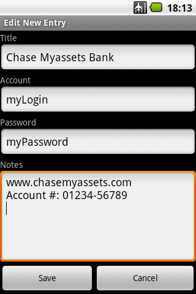

 Keyring for Android will read and write database files produced by the Keyring for Palm OS application. It lets you securely store secret information on your Android device. Use it to store passwords, online logins, account numbers or anything you want to store securely.
I recently laid my old trusty Palm Pilot to rest and switched to an Android device. I could easily replace all of the old Palm applications except for Memo and Keyring. I replaced Memo with Rdex using Dropbox for synchronization. For Keyring I ported KeyringEditor by Markus Griessnig, a Java-based implementation, to Android. KeyringEditor is based on Java Keyring v0.6 by Frank Taylor.
Keyring for Android is for anyone who wants to continue to use the Keyring for Palm OS database. Anyone starting a new database file may want to consider KeePass, a more recent password safe application that also has an Android version.
Keyring for Android—an Android application package. If you are browsing from an Android device it should just download and install. (You may need to use a file browser such as Astro to install it from the Download folder.) However, before downloading you will need to ensure "Unknown Applications" in "Settings/Applications" is enabled because you are not downloading the app from Android Market.
KeyringEditor by Markus Griessnig—a java-based keyring database file editor to run on your PC, Mac or Linux machine. Unzip the contents and run the java archive file KeyringEditor.jar.
An example Keyring database file. The initial password is set to "test."
First you need to transfer a Keyring database file to the Android's memory card. If you use Keyring for Palm OS the file is named Keys-Gtkr.pdb and will be found in the Palm backup folder on your PC after synchronizing your Palm to your PC. You can transfer it to your Android device via a USB cable or, alternatively, you might want to open it in the Dropbox app which will transfer and sync files automatically. A new database file can also be created using KeyringEditor.
To open a Keyring file, press the menu button and select "Open File." Navigate the folders in the memory card until you find the Keyring file you transferred. (The entry "../" allows you to back up one level in the tree of folders.) Select a file by touching it on the screen. Keyring files can also be opened via a file browser such as "My Files" or Astro or in the Dropbox app.
On opening a Keyring database file the password must first be entered. There are only two main screens. The List screen lists the titles of all entries. Select an entry to display it. A timeout function will lock the database after a configurable time. The Lock button will also lock the database.
To enable modification of the keyring database file, first disable "Read Only Mode" in the Menu/Preferences screen. Then a long touch on the entry screen will offer the New, Edit and Delete menu options.
To start a new database file use KeyringEditor or download the example file above (both start with an initial password "test"). Alternatively, consider using the KeePass application, a more recent password safe application that also has an Android version.
To change the password for the database file or the strength of the encryption use KeyringEditor.
This program is free software; you can redistribute it and/or modify it under the terms of the GNU General Public License as published by the Free Software Foundation; either version 3 of the License, or (at your option) any later version.
This program is distributed in the hope that it will be useful, but WITHOUT ANY WARRANTY; without even the implied warranty of MERCHANTABILITY or FITNESS FOR A PARTICULAR PURPOSE. See the GNU General Public License for more details: www.gnu.org/licenses.